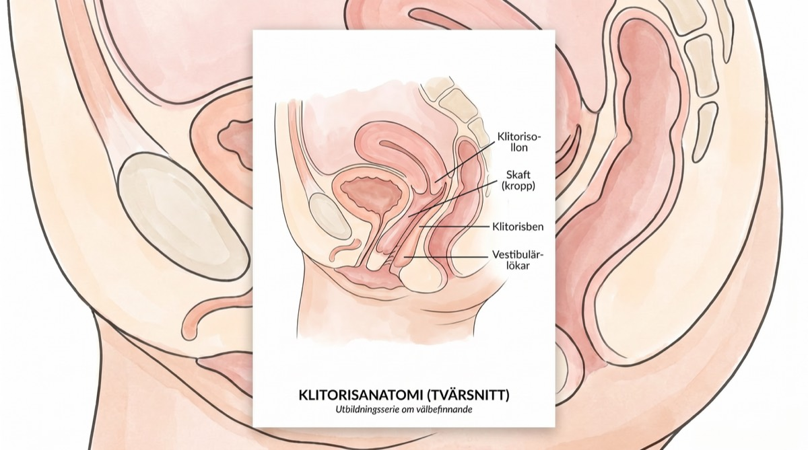
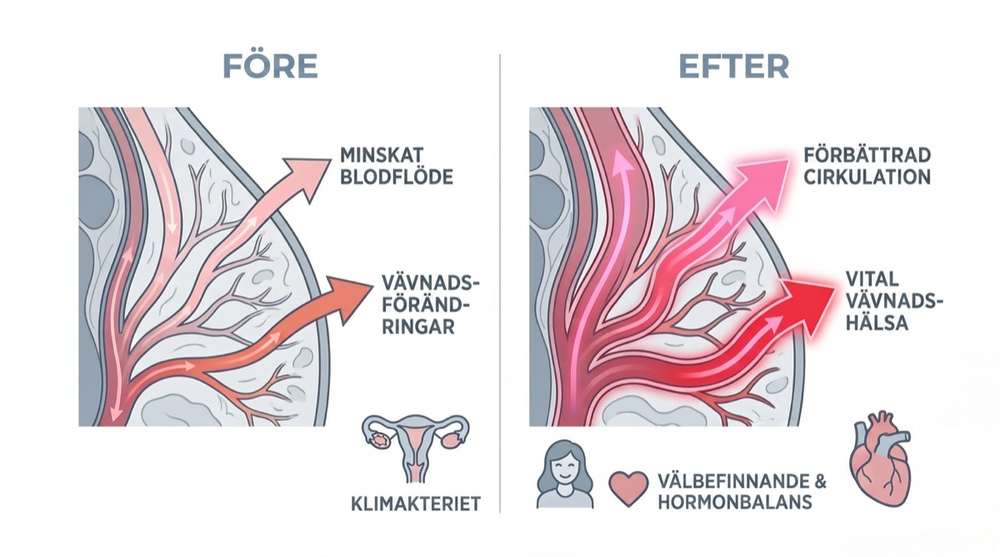

Varför vi tar upp det här
När vår redaktion först hörde talas om en "citronformad apparat" som tog klimakteriegrupperna med storm ska vi erkänna en sak – vi var skeptiska. Men efter att ha intervjuat dussintals kvinnor, rådfrågat gynekologer och, ja, testat den själva, förstår vi nog vad alla pratar om.
Det här är inte bara ännu en wellnesstrend. Den tar tag i ett verkligt medicinskt problem som drabbar miljontals kvinnor men som sällan kommer på tal: klitorisatrofi och den intima hälsa som går förlorad under klimakteriet.
Samtalet ingen förberedde oss på
Vi hör allt om värmevallningarna som får oss att svettas genom silkeslakanen klockan tre på natten. Vi hör om hjärndimman som får oss att leta efter glasögonen fast de sitter på näsan.
Men ingen sätter sig ner med ett glas vin och viskar: "Förresten, håller du inte igång det där nere kan klitoris faktiskt krympa."
Det kallas klitorisatrofi och är en del av det som kallas Genitourinary Syndrome of Menopause (GSM) – ett tillstånd som drabbar upp till 50 % av kvinnor efter klimakteriet, enligt North American Menopause Society.
"Den stora bortkopplingen"
För många av kvinnorna vi intervjuade handlade det inte bara om torrhet. Det handlade om domningen. En testare berättade hur hon försökte använda sin gamla vibrator från trettioårsåldern: "I stället för att kännas skönt kändes det bara … irriterande. Eller bedövat. Som att försöka kittla en valk."
Experter förklarar att vanliga vibratorer bygger på friktion och stötar. När vävnaden tunnas ut av lågt östrogen kan direkt vibration faktiskt dämpa nervkänsligheten ytterligare, och då uppstår den där bedövade känslan.
"Sluta vibrera. Börja suga."
– Bäckenbottenspecialister
Gynekologer som är inriktade på klimakterievård förklarar: "När östrogenet sjunker minskar blodflödet till bäckenområdet. Vävnaden tunnas ut och förlorar både elasticitet och känsel. Inom vården brukar man säga 'använd den eller mista den' – du behöver ett jämnt blodflöde för att hålla vävnaden frisk."
Här kommer Nancys Lem
Det är här den lilla gula apparaten kommer in. Nancys Lem säljs inte som en sexleksak – den beskrivs som en intim wellnessapparat. Och efter vår research förstår vi varför.
Till skillnad från vanliga vibratorer som bygger på friktion (vilket kan irritera tunn vävnad i klimakteriet) använder Lem så kallad tryckvågsteknik. Tänk dig skillnaden mellan att gnugga sandpapper mot huden och en mild vakuummassage.
Vetenskapen: därför fungerar tryckvågsteknik
❌ Vanliga vibratorer:
Bygger på ytlig friktion som kan irritera känslig, tunn vävnad. Kan ge domningar eller små sprickor.
✓ Tryckvågsteknik:
Skapar milda sugvågor utan direkt kontakt. Drar syrerikt blod in i vävnaden och främjar både hälsa och känsel.
Så här fungerar det: Lem bildar en mjuk tätning runt klitoris och stimulerar den med vågor av lufttryck – ungefär som känslan av oralsex, fast jämn och outtröttlig. Eftersom inget gnids mot huden uppstår ingen irritation alls.
Men det verkligt fina är fysiken: det milda suget skapar en vakuumeffekt som drar djupt, syrerikt blod in i vävnaden. Det väcker nerver som legat i dvala i åratal.
"Det känns som att den drar ut orgasmen … pulserandet håller i sig mycket längre."
– Alisha, betatestare (från verifierade kundrecensioner)
Så står den sig: vår jämförelse
Vi jämförde Lem med vanliga lösningar för vävnadshälsa i klimakteriet
| Egenskap | Nancys Lem | Vanlig vibrator | Östrogenkräm |
|---|---|---|---|
| Fungerar för känslig vävnad | ✅ Ja | ❌ Kan irritera | ⚠️ Långsamma resultat |
| Ökar blodflödet | ✅ Djup vävnad | ⚠️ Bara ytan | ✅ Gradvis |
| Ingen friktion eller irritation | ✅ Ingen kontakt | ❌ Ger friktion | ✅ Ja |
| Njutning direkt | ✅ Direkt | ⚠️ Varierar | ❌ Ingen njutning |
| Diskret design | ✅ Ser ut som en citron | ❌ Uppenbar | ✅ Ja |
| Rekommenderas av läkare | ✅ För blodflödet | ⚠️ Ibland | ✅ Ja |
| Pris | 883 kr (engångsköp) | 500–1 500 kr | 300–500 kr/månad |
Designfilosofin utan skam
En sak som verkligen slog vår redaktion under testet: designen är medvetet diskret. Den är klargul, ryms i handflatan och ser faktiskt ut som en dekorativ citron.
"Nattygsbordstestet"

Vi har alla den där lådan. Skamlådan. Där vi gömmer de fula plastpryttlarna under gamla strumpor.
En av våra testare berättade: "Jag råkade lämna min Lem på badrumshyllan när svärmor var på besök. Hon plockade upp den och sa: 'Åh, är det här en av de där nya ansiktsborstarna? Vad mjuk den känns!'"
Den klarar nattygsbordstestet. Den ser ut som exklusiv egenvård, inte som en sexleksak. För det är precis vad den är.
⚠️ Varning för billiga kopior
När vi hade publicerat vår första recension undrade flera läsare varför de inte borde köpa 200-kronorsvarianten på Amazon. Här är vad experterna säger.
"Billiga leksaker görs av porösa jelly- och TPE-material", varnade hon. "Små bakterier fastnar i porerna, och det är en stor risk för kvinnor i klimakteriet som redan lätt får urinvägsinfektioner."
Hello Nancy Lem är gjord av 100 % medicinsk, porfri silikon. Riskera inte hälsan för att spara 200 kr.
Diskret tyst
Ultratyst motor för full diskretion
Vattentät (IPX7)
Perfekt i badet eller duschen
Medicinsk silikon
Kroppsvänlig, porfri och lätt att rengöra
Magnetisk laddning
120 minuter per laddning
Produktgalleri
Att öppna paketet: första intrycket räknas

En av de första sakerna våra testare la märke till? Förpackningen är snygg. Inga skrikiga färger, inga pinsamma bilder. Lådan är stramt vit med diskreta gulddetaljer – den skulle lätt kunna tas för en lyxig hudvårdsprodukt.
Det här finns i lådan:
- Lem-apparaten (klargul, ryms i handflatan)
- Magnetisk USB-laddningskabel
- Mjuk sammetspåse (perfekt på resan)
- Liten guide för egenkärlek med tips på användning och wellnessråd
- Snabbguide med illustrerade instruktioner
"När jag öppnade lådan blev jag verkligt överraskad av hur premium allt kändes. Det kändes inte som en 'sexleksak' – det kändes som en investering i mig själv." – Testare, 54 år
Lite anatomi: därför är klitorisstimulering viktig

Vetenskapen om njutning
Det här borde varje kvinna veta om sin kropp
Här är något man aldrig lärde ut i skolans sexualkunskap: klitoris har omkring 8 000 nervändar – fler än någon annan del av kroppen, hos kvinnor som hos män. Som jämförelse har penis ungefär 4 000.
Men så kommer haken: 75 % av alla kvinnor kan inte få orgasm enbart genom penetration, enligt forskning i Journal of Sex & Marital Therapy. Klitoris är nyckeln.
Det här händer under klimakteriet:

❌ Problemet:
- • Östrogennivåerna sjunker med 90 %
- • Blodflödet till bäckenområdet minskar
- • Klitorisvävnaden kan krympa med 20–30 %
- • Nervkänsligheten avtar
- • Den naturliga vätskan minskar
✓ Lösningen:
- • Regelbunden stimulering håller igång blodflödet
- • Håller nervbanorna aktiva
- • Motverkar vävnadsatrofi
- • Bevarar känsligheten
- • Främjar den naturliga vätskan
Gynekologer säger det rakt ut: "Tänk på det som träning för bäckenbotten. Använder du inte musklerna och håller igång blodflödet, så förtvinar de. Samma sak gäller för klitorisvävnaden."
💡 Slutsatsen:
Regelbunden klitorisstimulering handlar inte bara om njutning (även om det är en fin bonus). Det handlar om att hålla vävnaden frisk, bevara nervfunktionen och undvika de bestående förändringar som kommer om man låter bli. Det här är förebyggande hälsovård.
"Men hur blir det med min partner?" Det frågade vi också
"Tre minuters miraklet" (och därför älskar partnern det)
Ärligt talat: för många kvinnor över 50 kan det ta 20 minuter eller mer (och en hel del mental ansträngning) att komma i närheten av klimax. Med Lem? Tre minuter.
Den vanligaste invändningen från kvinnor: "Kommer min partner att känna sig ersatt?"
Absolut inte. Lem är liten. Många par använder den under samlag. Den fungerar som en brygga som ser till att du är riktigt upphetsad och naturligt våt, och tar bort pressen på partnern att "prestera".
En testare berättade: "Det förvandlade vårt sovrum från en plats för ångest tillbaka till en lekplats."
En av de vanligaste frågorna vi fick under vår research: "Kommer min partner att känna sig hotad av det här?"
Så här ligger det till: Lem är ingen ersättning – den är ett plus. Många av paren vi intervjuade berättade att Lem i de intima stunderna faktiskt förbättrade närheten mellan dem.
"Min man var nyfiken, inte hotad. Nu använder han den på mig under förspelet. Det tar bort pressen på honom att 'prestera', och jag får precis det jag behöver. Alla vinner."
– Valeria, 55, gift i 28 år
Den lilla storleken gör den lätt att få med i samvaron utan att det känns klumpigt. Och eftersom den är handsfree när den väl sitter på plats kan ni båda fokusera på varandra.
Så använder par Lem:
Under förspelet
Partnern håller den på plats under kyssar och smek
Under samlaget
Placerad för stimulering av klitoris och penetration samtidigt
På egen hand medan partnern ser på
Bygger närhet och hjälper partnern att lära sig vad som funkar
"Underhåll" mellan gångerna
På egen hand håller du vävnaden frisk när sex med partner är glesare
Tips: Prata med varandra – det är A och O. Se det som ett wellnessverktyg som gynnar er båda genom att minska pressen och öka njutningen.
Alla skäl att prova, inga skäl att oroa sig
Vi gick igenom Hello Nancys garantier. Här är vad de faktiskt betyder.
30 dagars "njutningsgaranti"
Inte nöjd? Få hela summan tillbaka – ingen retur behövs. De litar på att du är ärlig. Så säkra är de på sin sak.
Med andra ord: ingen ekonomisk risk alls. Prova den i en månad.
12 månaders garanti
Om något går fel med apparaten under första året byter de ut den. Gratis. Utan krångel.
Med andra ord: det här är ingen engångspryl. Den är byggd för att hålla.
Livstidssupport
Frågor om användningen? Funderingar kring rengöring? Deras kundtjänst svarar inom 24 timmar.
Med andra ord: du köper inte bara en produkt. Du blir en del av en gemenskap.
Den verkliga frågan: vad har du att förlora?
Vi har gått igenom vetenskapen. Vi har visat dig recensionerna. Vi har förklarat garantierna. Vid det här laget är den enda risken att inte prova den.
Vi räknar lite:
Om du provar den:
- ✓ Du kan återupptäcka njutning du trodde var borta
- ✓ Du kan förbättra vävnadshälsan och motverka atrofi
- ✓ Du kan sova bättre (orgasmer frigör oxytocin)
- ✓ I värsta fall får du dina 883 kr tillbaka
Om du låter bli:
- • Vävnadsatrofin fortsätter
- • Nervkänsligheten fortsätter att avta
- • Det intima välbefinnandet förblir en kamp
- • Du kommer alltid att undra "tänk om?"
Därför har Hello Nancy vårt förtroende
Vi rekommenderar inte produkter lättvindigt. Så här klarade Hello Nancy våra redaktionella krav.
Prisbelönt
Women's Wellness Tech Award 2025 från International Wellness Institute
Verifierade recensioner
4,7★ i snitt från 14 907 verifierade köpare (inga falska recensioner)
Över 1 miljon sålda
Mer än 1 000 000 apparater sålda världen över sedan lanseringen 2023
Medicinsk kvalitet
Medicinsk silikon och noggranna säkerhetstester